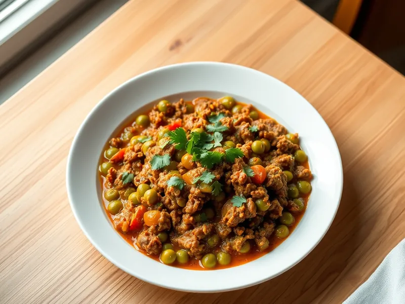

Кима - фарш с зелёным горошком по-индийски
Пряный говяжий фарш с зелёным горошком, помидорами, имбирём и карри
30 мин4 порц.459 ккал на порциюБ 25 · Ж 33 · У 14Интернациональная кухня
Открыть в приложении: порции, таймеры, список покупок
Продукты на 4 порц.
- Говяжий фарш500 г
- Лук репчатый2 шт
- Чеснок3 зуб.
- Имбирь15 г
- Карри (приправа)2 ч. л.
- Помидоры2 шт
- Зелёный горошек200 г
- Растительное масло2 ст. л.
- Соль1 ч. л.
- Кинза по желаниюпо вкусу
Как готовить
- Мелко нарежьте лук, натрите на мелкой тёрке чеснок и имбирь, помидоры нарежьте кубиком.
- Разогрейте масло на среднем огне и обжарьте лук 6 минут до золотистого цвета. Добавьте чеснок и имбирь и жарьте 1 минуту.
- Выложите фарш, всыпьте карри и соль и жарьте на сильном огне 6 минут, разбивая лопаткой, до румяных крошек.
- Добавьте помидоры и тушите на среднем огне 4 минуты, пока они не разварятся в соус.
- Всыпьте горошек, можно прямо замороженный, накройте крышкой и готовьте на слабом огне 5 минут, пока он не станет мягким. Посыпьте кинзой.
Совет. Хорошо обжаренный до золота лук - главная основа вкуса кимы, не сокращайте эти 6 минут.